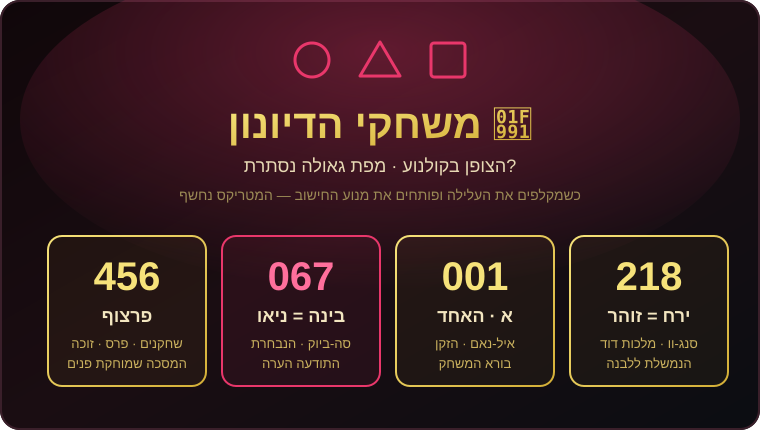
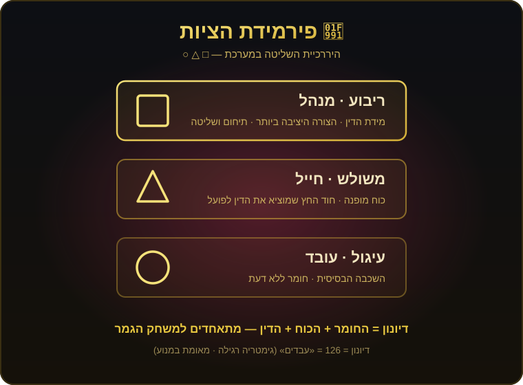

כשצפינו ב«משחקי הדיונון» (Squid Game), כולנו ראינו דרמת הישרדות אלימה על כסף וחובות. אבל אם מקלפים את העלילה ופותחים את מנוע החישוב — המטריקס נחשף. הסרט הזה הוא לא רק על הישרדות קפיטליסטית; הוא מדויק למילימטר לארכיטיפים העתיקים של מחיקת זהות מול תיקון. הנה התיק המלא, מספר אחר מספר.
הסדרה בנויה על מחיקת שמות והפיכת בני אדם למספרים סידוריים (מ‑001 ועד 456), בדיוק כמו במטריקס או בשעבוד מצרים. המנוע מצליב את זה בצורה מצמררת:
🦑 דיונון = 126 בגימטריה רגילה — הערך המדויק של המילה עבדים. העלילה כולה היא שעבוד מוחלט לחוב.
🎭 456 (מספר השחקנים, סכום הפרס וגם הזוכה) = פרצוף. הסדרה עוסקת כולה במסכות — השומרים במסכות, אנשי ה‑VIP במסכות, והשחקנים שמאבדים את הפנים שלהם והופכים למספר על גב המעיל.
המשתתפת 067 (קאנג סה‑ביוק), הפליטה מצפון קוריאה, היא הלב הפועם והתודעה הערה של הסדרה. בפוסט הקודם שלנו על «המטריקס» גילינו שניאו (Neo) נושא בדיוק את אותו ערך — 67 = בינה. סה‑ביוק היא ה«ניאו» של משחקי הדיונון: היא רואה את המערכת כפי שהיא, לא נשארת עיוורת, ונושאת את תדר התודעה הטהור שכלוא במכונה.
שחקן 001 (איל‑נאם, הזקן) מתגלה בסוף כאדריכל ויוצר המשחק. בגימטריה, המספר 1 הוא האות «א» — האלף, הראשון, הבורא של המערכת. הראשון שיצר את הכללים הוא גם זה שמנהל את התנועה מראשיתה.
שחקן 218 (צ'ו סנג‑וו) נושא את הערך ירח = 218, ובאותו ערך בדיוק — זוהר = 218. הירח מסמל את מלכות דוד, שנמשלה ללבנה: «דוד מלך ישראל חי וקיים» — מלכות שאין לה אור משלה אלא מקבלת ומחזירה את אור השמש, בדיוק כפי שמידת המלכות מקבלת מלמעלה.
וכאן הרובד העמוק: אותו 218 הוא גם זוהר — האור הגנוז. הלבנה (המלכות) מצויה כעת במיעוט, אבל עתידה להתמלא. גם בתוך «מערכת» שמוחקת זהות, ניצוץ המלכות והאור הנסתר ממתין להתגלות.
(רמז משלים — פרשנות)

המסכות של השומרים אינן קישוט אלא היררכיה מדויקת של שליטה: עיגול = העובדים, השכבה הבסיסית (חומר ללא דעת); משולש = החיילים, כוח מופנה שחייב חוד (חץ) כדי לפעול; ריבוע = המנהלים, הצורה היציבה ביותר — תיחום ומידת הדין. הדיונון עצמו הוא השילוב של כולם — השלב שבו החומר, הכוח והדין מתאחדים למשחק הגמר.
«משחקי הדיונון» הוא עוד תחנה ב«מטריקס» התודעתי: מערכת שמכריחה אדם לוותר על השם שלו לטובת מספר — וה«נבחר» שלה (067) שוב מוביל אותנו לאותו קוד עתיק: 67 = בינה = ניאו.
ארכיטיפ אחד, דור אחר, אותה מציאות. האם המשחק הזה קורה עכשיו גם מחוץ למסך?